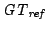
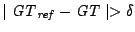
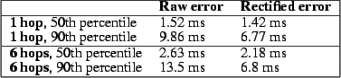
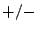
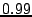

Geoff Werner-Allen, Konrad Lorincz, Jeff Johnson, Jonathan Lees, and Matt Welsh
Division of Engineering and Applied Sciences, Harvard University
Dept. of Earth Sciences, University of New Hampshire
Dept. of Geological Sciences, University of North Carolina
The science requirements of reliable data collection, accurate event detection, and high timing precision drive sensor networks in new directions for geophysical monitoring. The main contribution of this paper is an evaluation of the sensor network as a scientific instrument, holding it to the standards of existing instrumentation in terms of data fidelity (the quality and accuracy of the recorded signals) and yield (the quantity of the captured data). We describe an approach to time rectification of the acquired signals that can recover accurate timing despite failures of the underlying time synchronization protocol. In addition, we perform a detailed study of the sensor network's data using a direct comparison to a standalone data logger, as well as an investigation of seismic and acoustic wave arrival times across the network.
Sensor networks are making inroads into a number of scientific explorations, including environmental monitoring [1,25], habitat monitoring [2,10,23], and structural monitoring [16,14,30]. In each of these domains, the use of low-power wireless sensors offers the potential to collect data at spatial and temporal scales that are not feasible with existing instrumentation. Despite increased interest in this area, little has been done to evaluate the ability of sensor networks to provide meaningful data to domain scientists. A number of challenges confound such an effort, including node failure, message loss, sensor calibration, and inaccurate time synchronization. To successfully aid scientific studies, sensor networks must be held to the high standards of current scientific instrumentation.
In this paper, we take a hard look at the performance of a wireless sensor network deployed on an active volcano. We evaluate its effectiveness as a scientific instrument using two metrics: data fidelity and yield. Data fidelity encompasses the quality and consistency of retrieved seismoacoustic signals, while data yield reflects the quantity of data delivered by the network.
Typical volcano monitoring studies employ GPS-synchronized data loggers recording both seismic and acoustic signals. These provide high data fidelity and yield but are bulky, power hungry, and difficult to deploy. Existing analog and digital telemetry is similarly cumbersome. The use of wireless sensors could enable studies involving many more sensors distributed over a larger area. However, the science requirements pose a number of difficult challenges for sensor networks. First, seismoacoustic monitoring requires high data rates, with each node sampling multiple channels at 100 Hz. Second, signal analysis requires complete data, necessitating reliable data collection. Third, volcano studies compare signals across multiple sensors, requiring that collected data be accurately timestamped against a GPS-based global clock.
The core contribution of this paper is an analysis of the efficacy and accuracy of a volcano-monitoring sensor network as a scientific instrument. This is the first paper to our knowledge to take a science-centric view of a sensor network with such demanding data-quality requirements. In this paper, we evaluate the data collected from a 19-day field deployment of 16 wireless sensors on Reventador volcano, Ecuador, along the following axes:
The rest of this paper is organized as follows. The next section provides background on the use of wireless sensors for volcano monitoring and outlines the underlying science goals. In Section 3 we describe the architecture of our system and the field deployment at Reventador. Sections 4 through 8 present a detailed analysis of the network's performance along each of the evaluation metrics described above. Section 9 discusses related work and Section 10 presents several lessons learned from the deployment. Section 11 outlines future work and concludes.
Scientists monitor volcanoes for two non-exclusive reasons: (1) to monitor hazards by assessing the level of volcanic unrest; and (2) to understand physical processes occurring within the volcano, such as magma migration and eruption mechanisms [21,12]. The most common instrument used is the seismometer, which measures ground-propagating elastic radiation from both sources internal to the volcano (e.g., fracture induced by pressurization) and on the surface (e.g., expansion of gases during an eruption) [12]. In addition, microphones are sometimes employed to record infrasound, low-frequency ( 20 Hz) acoustic waves generated during explosive events. Infrasound is useful for differentiating shallow and surface seismicity and for quantifying eruptive styles and intensity [7].
The type of instrumentation used to study volcanoes depends on the the science goals of the deployment. We are focused on the use of wireless sensors for temporary field deployments involving dozens of sensor stations deployed around an expected earthquake source region, with inter-node spacing of hundreds of meters. A typical campaign-style deployment will last weeks to months depending on the activity level of the volcano, weather conditions, and science requirements.
Geophysicists often use standalone dataloggers (e.g., Reftek 130 [20]) that record signals from seismometers and microphones to a flash drive. These data loggers are large and power-hungry, typically powered by car batteries charged by solar panels. The sheer size and weight precludes deployments of more than a small number of stations in remote or hazardous areas. Additionally, data must be retrieved manually from each station every few weeks, involving significant effort. Analog and digital radio telemetry enables real-time transmission of data back to an observatory. However, existing telemetry equipment is very bulky and its limited radio bandwidth is a problem for collecting continuous data from multiple channels.
Wireless sensor networks have the potential to greatly enhance understanding of volcanic processes by permitting large deployments of sensors in remote areas. Our group is one of the first to explore the use of wireless sensor networks for volcano monitoring. We have deployed two wireless arrays on volcanoes in Ecuador: at Volcán Tungurahua in July 2004 [27], and at Reventador in August 2005 [28]. The science requirements give rise to a number of unique challenges for sensor networks, which we outline below.
High-resolution signal collection: Data from seismometers and microphones must be recorded at relatively high data rates with adequate per-sample resolution. A sampling rate of 100 Hz and resolution of 24 bits is typical. This is in contrast to sensor networks targeting low-rate data collection, such as environmental monitoring [23,25].
Triggered data acquisition: Due to limited radio bandwidth (less than 100 Kbps when accounting for MAC overhead), it is infeasible to continuously transmit the full-resolution signal. Instead, we rely on triggered data collection that downloads data from each sensor following a significant earthquake or eruption. This requires sensor nodes to continuously sample data and detect events of interest. Event reports from multiple nodes must be collated to accurately detect global triggers across the network.
Timing accuracy: To facilitate comparisons of signals across nodes, signals must be timestamped with an accuracy of one sample time (i.e., 10 ms at 100 Hz). Data loggers generally incorporate a GPS receiver and use low-drift oscillators to maintain accurate timing. However, equipping each sensor node with a GPS receiver would greatly increase power consumption and cost. Instead, we rely on a network time synchronization protocol [4,11] and a single GPS receiver. However, correcting for errors in the time synchronization protocol requires extensive post-processing of the raw timestamps.
In this section we provide a brief overview of the design of our volcano monitoring sensor network and details of the deployment at Reventador. In an earlier magazine article [28] we describe the system and deployment in more detail, although we have not previously published results evaluating its performance.
Our wireless sensor node (Figure 1) is based on the TMote Sky [13] platform, which integrates a TI MSP430 processor, 10 KB of SRAM, 48 KB of program ROM, 1 MByte of flash memory, and a Chipcon CC2420 radio. All software is implemented in TinyOS [5]. We designed a custom sampling board that provides four channels of 24-bit analog-to-digital conversion (TI AD7710).
Nodes were interfaced to either a single-axis seismometer (GeoSpace GS-11) or three seismometers in a triaxial configuration (GeoSpace GS-1). Both sensors are passive instruments; ground motion generates a voltage which is amplified and digitized by the sampling board. In addition, each node was attached to an omnidirectional microphone (Panasonic WM-034BY). This microphone has been used in other infrasonic monitoring studies [7].
Each node was equipped with an 8.5 dBi omnidirectional antenna mounted on 1.5 m of PVC pipe. This permitted line-of-sight radio range of over 1 km without amplification; nodes were typically placed 200-400 m apart in our deployment. Nodes were powered by two D-cell batteries with a lifetime of approximately 1 week. Each node was enclosed in a weatherproof Pelican case.
Several other pieces of hardware complete the system. FreeWave radio modems provided a long-distance radio link between the sensor array and the volcano observatory, 4.6 km away. A laptop located at the observatory logged data and was used to monitor and control the network. Finally, to establish a global timebase, we used a single Crossbow MicaZ [3] mote interfaced to a GPS receiver (Garmin OEM 18 LVC). The GPS receiver provided a 1 Hz pulse that is accurate to GPS time within 1 s, and acted as the root of the network time synchronization protocol as described in Section 7.
Nodes form a multihop routing tree rooted at the gateway node that is physically attached to the FreeWave modem; we use a variant of MintRoute [29] that uses the CC2420's Link Quality Indicator metric to select routing paths. Each node transmits a status message every 10 sec that includes its position in the routing tree, buffer status, local and global timestamps, battery voltage, and other information. In addition, the base station can issue a command to each node, instructing it to respond with an immediate status message, start or stop data sampling, and set various software parameters. Commands are propagated using a simple flooding protocol. The Deluge protocol [6] was also used to permit over-the-air reprogramming and rebooting of nodes.
Because of the high data rates involved (600-1200 bytes/sec from each node) it is infeasible to continuously transmit all sensor data. Rather, nodes are programmed to locally detect interesting seismic events and transmit event reports to the base station. If enough nodes trigger in a short time interval, the base station attempts to download the last 60 sec of data from each node. This design forgoes continuous data collection for increased resolution following significant seismic events, which include earthquakes, eruptions, or long-period (LP) events, such as tremor. The download window of 60 sec was chosen to capture the bulk of the eruptive and earthquake events, although many LP events can exceed this window (sometimes lasting minutes or hours). To validate our network against existing scientific instrumentation, our network was designed for high-resolution signal collection rather than extensive in-network processing.
During normal operation, each node continuously samples its seismic and acoustic sensors at 100 Hz, storing the data to flash memory. Data is stored as 256-byte blocks in the flash. Each block is tagged with the local timestamp corresponding to the first sample in the block. This timestamp is later mapped onto a global time reference as described in Section 7. The 1 Mbyte flash is treated as a circular buffer storing approximately 20 min of data.
In addition, nodes run an event detection algorithm that computes two exponentially-weighted moving averages (EWMA) over the input signal with different gain settings. When the ratio between the two EWMAs exceeds a threshold, the node transmits an event report to the base station. If the base station receives triggers from 30% of the active nodes within a 10 sec window, it considers the event to be well-correlated and initiates data collection.
Our reliable bulk-transfer protocol, called Fetch, operates as follows. The base station waits for 30 sec following an event before iterating through all nodes in the network. The base sends each node a command to temporarily stop sampling, ensuring the event will not be overwritten by subsequent samples. For each of the 206 blocks in the 60 sec window, the base sends a block request to the node. The node reads the requested block from flash and transmits the data as a series of 8 packets. After a short timeout the base will issue a repair request to fill in any missing packets from the block. Once all blocks have been received or a timeout occurs, the base station sends the node a command to resume sampling and proceeds to download data from the next node.
Our deployment at Reventador took place between August 1-19, 2005. Reventador is an active volcano located in northern Ecuador, about 100 km from Quito. During this time, Reventador's activity consisted of small explosive events that ejected ash and incandescent blocks several times a day. Associated seismicity included numerous explosion earthquakes as well as extended-duration shaking (tremor) and shallow rock-fracturing earthquakes.
We deployed 16 sensor nodes on the upper flanks of Reventador, as shown in Figure 3, over a 3 km linear configuration radiating away from the vent. The resulting multihop topology is shown in Figure 2. The upper flanks of the volcano were completely deforested by a large eruption in November 2002, allowing for line-of-sight radio communication between adjacent sensor nodes. Two standalone seismic stations, consisting of a broadband sensor, a Reftek 130 data logger with 1 GByte flash memory cards, and a GPS receiver for timestamping, were colocated with sensor nodes. The data from these stations is essential to our network validation, described in Sections 5 and 7. The base station was located at a small hotel 4.6 km from the deployment site. The sensors were deployed for a total of 19 days, during which time the network recorded data from 229 earthquakes, eruptions, and tremor events, logging 107 MBytes of data. The long hike and lack of roads prevented frequent returns to the deployment site, although we returned several times to change batteries and perform other network maintenance.
The first evaluation metric that we consider is the robustness of the sensor network. Sensor network deployments have typically been plagued by failures of individual nodes and the support infrastructure. Clearly, robustness has a direct effect on the resulting data yield. Our evaluation shows that while nodes exhibited very high uptimes, the base station infrastructure was very unreliable, and a single bug affecting the Deluge protocol caused a three-day outage of the entire network.
Figure 4 shows the number of nodes reporting over each 10-minute interval during the entire 19-day deployment. A node is included in the count if any of its status messages were received at the base station during the 10-minute window. Annotations show several significant events that occurred during the deployment. The network was installed in two phases of 8 nodes each, the first on August 1 and the second on August 3. At label (1) the entire 16 node network is operational. However, initial software misconfiguration required rebooting several nodes during a third visit to the deployment site on August 5. The network then ran with 16 nodes active for a little more than 2 days.
At label (2) on August 8, a software command was transmitted to reboot the network, using Deluge [6], in an attempt to correct the time synchronization fault described in Section 7. This caused a software failure affecting all nodes, with only a few reports being received at the base station later on August 8. After repeated attempts to recover the network, we returned to the deployment site on August 11 (label (3)) to manually reprogram each node. However, only 11 nodes could be reached before nightfall, forcing a return to the observatory. On August 12 (label (4)) we returned to the deployment site and reprogrammed the remaining 5 nodes.
From August 13 through 18, all 16 nodes were reporting nearly continuously. The intermittent failures (label (5)) were caused by power outages at the observatory, causing the base station laptop and radio modem to fail. During these times no data was logged by the base station although the sensor nodes themselves were probably operational, since all nodes would report when the base station recovered.
Several days before the end of the deployment, node 204, located closest to the vent, stopped reporting data (label (6)). When the network was disassembled we discovered that the antenna mast had been destroyed, most likely by a bomb ejected from the volcano during an eruption, although the node itself remained intact. This failure underscores the importance of remote telemetry for acquiring data at hazardous volcanoes.
Figure 5 shows the uptime for each node during the 19-day deployment. Each bar consists of three portions. The lowest portion is the apparent uptime of each node accounting for both the base station failures and single 3-day software outage. Because base station failures did not affect individual nodes, the middle bar shows the apparent uptime including only the 3-day outage. In this case, the mean node uptime is 69%. However, with the 3-day outage factored out, nodes achieved an average uptime of 96%. These numbers are encouraging and suggest that the sensor nodes were very reliable in spite of the software crash.
Based on discussions with the authors of Deluge, we believe this failure was caused by a single bug in the InternalFlash TinyOS component (which has since been fixed). This bug prevented Deluge from storing critical state information, causing nodes to reboot continuously at short intervals. We did not see this behavior in the lab before deployment, although we had not rigorously tested this portion of the code. In retrospect, it was optimistic of us to rely on a complex network reboot protocol that had not been field-tested. Deluge was removed from the binary used during the network reprogram following the failure; it was replaced with a simpler mechanism to reboot individual nodes using a radio command.
Failures of the base station infrastructure were a significant source of network downtime during the deployment. This contrasts with common assumptions that the base station is generally reliable and operating on a continuous power source. This was our expectation prior to the deployment, and we did not make adequate preparations for the intermittent electrical supply at the observatory. A backup diesel generator was used during nightly power outages, with extra laptop and car batteries supplying power when it failed. However, this approach was not ultimately successful.
It may be surprising that node uptime is not related to depth in the routing tree. This suggests that if a node is ``down'' (i.e., we do not receive any status messages from it during a 10-minute window) that it is still active and routing packets for its children in the tree, even as its own status messages are being lost. An alternate explanation is that a node could select an alternate parent in the routing topology when its parent fails. However, our analysis of the routing topology (Figure 2) does not support this view, since nodes rarely use more than one parent. For example, node 214 always routes data through node 251. The volcano-induced failure of node 204 near the end of the deployment is the only notable failure of a single node.
Our network was designed to capture interesting volcanic signals. Thus, it is critical that the system correctly identify and report such events. This section evaluates our event detection algorithm both in terms of the number and rate of event triggers as well as its ability to detect scientifically interesting events.
Figure 6 shows the total number of events reported by each node during the deployment. It shows a wide variation in the event trigger rate, from 70 triggers for node 213 to 1830 triggers for node 204. Variation in the trigger rate can be attributed to many factors, including the location of the node, the orientation of the seismometer, and the quality of the seismometer-to-ground coupling. Note that the trigger rate does not seem to be related to distance from the vent. Although node 204 was closest to the vent and reported the most triggers, nodes 200, 205, and 210 all had high trigger counts despite being significantly farther away.
Figure 7 shows both the number of individual node and global event triggers over each hour. We observe that the volcano's activity varied greatly, generating trigger counts ranging between 2 and 405 events per hour when the network was online. This activity translates into up to 5 global event triggers an hour, each initiating a Fetch download cycle of the associated data.
The volcano's bursty and unpredictable activity makes the network's design more challenging than systems designed for statically-scheduled data collection. The data collection protocol, based on our earlier deployment at Tungurahua [27], assumed that events would be rare and that it would be unnecessary to simultaneously record signals for one event while downloading another. As a result, we missed a number of impressive back-to-back eruptions typical of the activity at Reventador. It is worth noting that the variable number of event reports is itself a measure of the volcano's activity level and could be used to assess hazard levels.
The network detected 229 eruptions, explosions, earthquakes, and tremor events during the deployment. Ideally, we would like to assess its accuracy in terms of the fraction of true events detected, as well as the false positive rate. Given the high degree of coherence required by the global event detector (requiring 30% of the active nodes to trigger within a short time window), we would be surprised if the sensor network recorded any false events. Indeed, all of the signals we did capture appear to be based on true volcanic activity, indicating a zero false positive rate.
We intended to apply our event detection algorithm to the signals collected by the two broadband seismic stations to establish the algorithm's accuracy. Unfortunately, we found this to be difficult for several reasons. First, each of the broadband stations suffered intermittent power and software failures, either preventing them from logging any data, or corrupting the collected signals or timestamps. Thus, even in those cases where broadband data is available, it is not always accurate. Second, the broadband stations deployed a more sensitive seismometer with a much wider frequency response. The geophones used by our sensor nodes have a corner frequency of 4.5 Hz, while the broadband sensors have a corner frequency of 0.033 Hz. Additionally, the broadband seismometers are much more sensitive, generating voltages of 800 V/m/sec, whereas the geophones have a sensitivity of only 32 V/m/sec. As a result, the broadband sensors are able to detect much weaker seismic signals.
We focus our attention on a single day of data where the broadband stations were recording clean data and the sensor network was relatively stable. One of the authors, a seismologist, visually extracted events from the broadband data; during this 24-hour period, a total of 589 events were recorded by the broadband sensors. During the same time, the sensor network triggered on just 7 events, suggesting that our detection accuracy is very low (about 1%).
The network could have failed to detect a seismic event for one of four reasons: (1) failure of individual nodes; (2) failure of the base station or radio modem; (3) the low sensitivity of our seismometers; or (4) failure of the event detection algorithm itself. To factor out the increased sensitivity of the broadband seismometers, we only consider the 174 events with SNR from both stations, which we expect the geophones should have been able to detect as well. Also, Section 4 has already addressed the question of uptime, so we focus here on the inherent accuracy of the event detector when the network was operating correctly. 136 of the 174 broadband events occurred during times when the network was operational. Taking these two factors into account, the network's detection accuracy is still only about 5%.
Recall that during a Fetch download cycle, nodes disabled sampling to avoid overwriting data in flash. Download cycles could take up to several minutes per node (see Section 6), meaning that there are significant time windows when the network was unable to detect new events. During the Fetch cycles on August 15, the broadband stations recorded 42 events, 24% of the total events detected. This indicates that, all else being equal, the sensor network could have detected approximately 24% more events had we designed the protocol to sample and download simultaneously. We plan to add this feature in the next version of our system.
In the end, we believe that our low detection rate is the result of the parameters used in the EWMA-based event detection algorithm. These parameters were chosen prior to the deployment, based on our experience with detecting infrasonic events at a different volcano [27]. We did not experiment with modifying them in the field. Indeed, using our algorithm with these same parameters on the broadband data for August 15 detects only 101 events, a fraction of the events chosen manually by an expert. We plan to tune our event-detection parameters for future deployments based on the data collected by the broadband stations.
In this section we assess the performance of the Fetch data collection protocol. We evaluate Fetch in terms of its yield, its ability to successfully collect requested data; and its latency, the time to download events from the network.
We define the event yield of a Fetch transfer as the fraction of nodes for which the entire 60 sec signal was successfully downloaded following an event. The calculation only considers those nodes that were active at the time of the event detection (Figure 4). For example, if 10 nodes were active during an event, then the event yield is defined in terms of 10 nodes. Note that the Fetch protocol attempts to download a signal from all active nodes, even those that did not detect the event.
Figure 8 shows a CDF of the event yield for all 229 events recorded during the deployment. As the figure shows, the median event yield was 68.5% and the 90th percentile was 94%. The yield can be affected by several factors. First, the protocol will abort a transfer from a node after re-requesting the same block more than 20 times, or if the transfer from a single node exceeds 10 minutes. Second, because sampling is disabled while performing a data transfer, if two back-to-back events occur a node may not end up storing data for the second event.
Next, we look at the node yield which we define as the probability that an event was successfully downloaded from a given node. Like the event yield, the calculation only considers those nodes that were active at the time of each event detection. Node yield can be affected by several factors. The depth and radio link quality of a node's routing path to the base station affect packet loss rate and thereby the likelihood of a Fetch timeout. Additionally, two nodes outfitted with triaxial seismometers (nodes 250 and 251) sample and store twice as much data as the others, increasing the probability of a timeout. Finally, a bug in our control application caused node 250 to sample data continuously, even during a Fetch operation. As a result, this node was more likely to overwrite an event stored in flash before it could be downloaded.
Figure 9 shows the node yield for each of the nodes. We can see how the factors mentioned above affected performance. First, the nodes with the highest yield (above 80%) tend to be within two hops from the root (see Figure 2). However, despite being within two or three hops, node 209 had a fairly low yield. This is explained by the fact that node 209 had a poor link to its closest parent, node 200. In fact, although most nodes had a stable parent throughout the deployment, node 209 used node 200 as its parent only 33% of the time and nodes 206 and 207 the remaining 66% of the time. Node 213 also switched parents between nodes 204 and 208, but unlike node 209 it was always three hops away. Node 214 was the farthest node in terms of hopcount and as a result had one of the lowest yields. The larger amount of data was also a factor for the four-channel nodes, 250 and 251. In addition, node 251 was five radio hops from the gateway.
Transfer latency directly impacts data yield. Because we disabled sampling on each node (apart from node 250) during a Fetch download cycle, the duration of the data transfer also affects a node's ability to record back-to-back events.
The median latency for Fetch operations (downloading 60 sec worth of data from a single node) was 186 sec and the 90th percentile was 444 sec. Unsurprisingly, latency varies with the depth of the node in the routing tree. Figure 10 compares Fetch latency for nodes 200 and 214, located 1 and 6 hops away from the sink, respectively. Node 200 had a median Fetch latency of 94 sec, while node 214 had a median latency of 409 sec, about 63 sec per hop. This is due to both increased delay for propagating Fetch command messages, as well as increasing packet loss and retransmission overheads as the data flows over multiple hops to the base.
Fetch was initially designed to support reliable downloads of infrequent events and we did not anticipate the need to capture back-to-back signals. Unfortunately, these were common at Reventador, and may necessitate a redesign. For example, it may be possible to reduce latency by streaming multiple blocks in one request and reconstructing partial blocks after a burst. Caching recently-received blocks on intermediate nodes could reduce latency for repair requests [14]. However, such changes would greatly increase the complexity of the protocol. For this deployment we opted to prioritize simplicity and stability over performance.
When analyzing seismoacoustic data acquired at volcanoes, accurate timing of recorded signals is paramount. Studying volcanic source processes necessitates precisely identifying the arrival time of P- and S-waves at each sensor. Also, correlating signals across the sensor array requires accurately timestamping each sample. Ideally, timing should be accurate to within one sample interval, or 10 ms when sampling at 100 Hz. As described earlier, we opted to use a single GPS receiver and employ a multihop time-synchronization protocol to establish a global timebase. The protocol worked well in laboratory experiments. However, it experienced significant failures in the field, requiring extensive postprocessing of the data to recover accurate timing for each signal.
In this section, we provide an overview of the time synchronization errors observed in the field. We then present a novel time rectification technique that allows us to recover accurate timing despite protocol failures. We evaluate our approach through lab experiments with a known, ground-truth timebase, and by comparing our signals with signals recorded by the colocated data loggers. This paper is the first to our knowledge to evaluate the stability of a multihop time synchronization protocol during a lengthy sensor network field deployment.
We chose to use the Flooding Time Synchronization Protocol (FTSP) [11], an existing protocol developed for wireless sensor nodes. In the original FTSP work [11], timing errors of less than 67 sec were reported for an 11-hop network of Mica2 nodes. We verified in our testbed that FTSP provided a 90th-percentile time error of under 2.1 ms in a 5-hop linear network of TMote Sky nodes.
A single MicaZ sensor node was used as the root of the FTSP synchronization tree. It interfaced to a Garmin GPS receiver and received a 1 Hz interrupt synchronized to within 1 sec of the GPS ``pulse per second'' signal. When the interrupt is raised, the node records the GPS time and corresponding FTSP global time and sends a short message containing this information to the base station. Each sensor node runs the FTSP protocol which maintains a global timebase. Every 10 sec, each node records its local time and the corresponding FTSP global time, sending this information in its status message to the base station. Finally, as each node records data, the first sample of each block is marked with the node's local time. After downloading data from each node following an event, this local time can be used to recover the time for each sample in the block.
Therefore, we have three relevant timebases: the local time at each node; the global time established by the FTSP protocol; and the GPS time recorded by the FTSP root. The information in the nodes' status messages can be used to map local time to global time, and the information in the GPS node's status messages can be used to map global time to GPS-based GMT.
In the absence of failures, this mapping would be a straightforward process. However, in the field, we noticed that nodes would occasionally lose synchronization with the rest of the network and report FTSP global times with significant errors, sometimes exceeding several hours. We suspect that the sparse deployment conditions at the volcano might have led to different behavior in the time synchronization protocol than in the lab. For example, occasional message loss or failure of a neighbor could cause the node's global time to drift from the rest of the network. However, in lab tests that constrained the network topology we did not observe these instabilities.
Figure 11 shows an example of the FTSP instability observed in the field. The global time reported by two nodes suddenly jumps off by several hours, and the nodes do not resynchronize until rebooted 4.5 hours later. It turns out that two bugs conflated to cause this problem. First, it was discovered that the TinyOS clock driver would occasionally return bogus local timestamps. This bug was fixed in February 2006, several months after our deployment. Second, FTSP does not check the validity of synchronization messages, so a node reading an incorrect value for its local clock can corrupt the state of other nodes, throwing off the global time calculation. To our knowledge, few if any sensor network deployments have attempted to use network time synchronization protocols for extended periods. In addition, ours may have been the first deployment of FTSP on the TMote Sky platform where the clock driver bug manifested itself.
The failures of the time synchronization protocol make establishing the correct GPS-based timestamp for each data sample extremely challenging. Our time rectification approach filters and remaps recorded timestamps to accurately recover timing despite these failures. The time rectification process is illustrated in Figure 12. The first step is to filter the global timestamps recorded by each node, discarding bogus data. Second, we build a model mapping the local time on each node to FTSP-based global time. Third, we use the GPS timestamp information to build a second model mapping FTSP time to GMT. Finally, both models are applied to the timestamps recorded in each data block producing a GMT time for each sample.
We begin by filtering out status messages appearing to contain incorrect global timestamps. To do this, we correlate global timestamps from each node against a common reference timebase and reject those that differ by more than some threshold. For this, we use the base station laptop's local time, which is only used for filtering FTSP timestamps, not for establishing the correct timing. The filtering process in is many ways similar to prior work [17,18] on detecting adjustments in network-synchronized clocks.
We use the following abbreviations: LT is the local time of a node; GT is the FTSP global time; BT is the base station's local time; and GMT is the true GMT from the GPS signal. Each GPS status message logged by the base station consists of the triple (GT, GMT, BT). We use linear regression on this data to produce a reference timebase mapping BT to GT.1 For each node status message logged by the laptop (LT, GT, BT), we map BT to the expected  using the reference timebase. If , we discard the status message from further consideration. We use a threshold of sec. Although radio message propagation and delays on the base station can affect the BT for each status message, a small rejection threshold makes it unlikely that any truly incorrect FTSP timestamps pass the filter. Indeed, of the 7.8% of timestamps filtered out, the median GT error was 8.1 hours.
The goal of time rectification is to assign a GMT timestamp to each sample in the recorded data. In order to do so, we build two models: one mapping a node's local time to global time, and another mapping global time to GMT. From those status messages that pass the filter, we build a piecewise linear model mapping LT to GT using a series of linear regressions. Models are constructed for each node separately, since local times vary significantly between nodes. Each regression spans up to 5 minutes of data and we initiate a new regression if the gap between subsequent (LT, GT) pairs exceeds 5 minutes. Each interval must contain at least two valid status messages to construct the model. We take the LT value stored in each data block and use this model to recover the corresponding GT value.
The next step is to map global time to GMT. Each of the GPS node's status messages contain a (GT, GMT) pair. As above, we build a piecewise linear model mapping GT to GMT, and apply this model to the GT values for each data block. Finally, we assign a GMT value to each sample contained in the block, using linear interpolation between the GMT values assigned to the first sample in each block. This process makes no assumptions about sampling rate, which varies slightly from node to node due to clock drift.
Evaluating this time rectification process has proved difficult, primarily because we have no ground truth for the timing of the signals recorded in the field. However, by reproducing the deployment conditions in the lab, we have been able to measure the accuracy of the recovered timing in a controlled setting. In addition, as described earlier, two GPS-synchronized data loggers were colocated with our sensor network, providing us the opportunity to directly compare our time-rectified signals with those recorded by conventional instrumentation.
Our first validation took place in the lab. Feeding the output of a signal generator to both a miniature version of our sensor network and to a Reftek 130 data logger allowed us to directly compare the data between both systems. The miniature network consisted of a single sensor node, routing gateway, and GPS receiver node. The same software was used as in the field deployment. The Reftek 130 logs data to a flash memory card and timestamps each sample using its own GPS receiver.
The results showed a consistent 15 ms offset between the time-rectified signals recorded by the sensor node and the Reftek data logger. We discovered that this offset was due to delays introduced by the digital filtering performed by the ADC on our sensor board (see Section 3.1). Adjusting for this delay resulted in an indiscernible offset between the sensor node and Reftek signals. While this experiment does not reproduce the full complexity of our deployed network, it does serve as a baseline for validation.
In the second lab experiment, we set up a network of 7 sensor nodes in a 6-hop linear topology. The topology is enforced by software, but all nodes are within radio range of each other, making it possible to stimulate all nodes simultaneously with a radio message. Each node samples data and sends status messages using the same software as the field deployment. The FTSP root node periodically transmits a beacon message. On reception of the beacon, each node records the FTSP global timestamp of the message reception time (note that reception of the beacon message is not limited by the software-induced topology). Because we expect all nodes to receive this message at the same instant, modulo interrupt latency jitter, we expect the FTSP time recorded by each node to be nearly identical. The FTSP root also records the time that the beacon was transmitted, accounting for MAC delay. The experiment ran for 34 hours, during which time FTSP experienced instabilities similar to those seen during our deployment.
|  |
This allows us to compare the true global time of each beacon message transmission and the apparent global time on each receiving node, both before and after subjecting the data to our time rectification process. We call the difference between the true and apparent times the timestamp error. Figure 14 shows the results for nodes one and six hops away from the FTSP root. After rectification, 99.9% of the errors for the one-hop node and 93.1% of the errors for the six-hop node fall within our 10 ms error envelope.
Although time rectification works well in the laboratory, it is also necessary to evaluate its accuracy on the data collected during the field deployment. For this purpose, we made use of one of the broadband seismometer stations colocated with our sensor network. The RVEN (for ``Reventador vent'') station was located 56 m from sensor node 213. Given their proximity, we would expect the seismic waveforms captured by both RVEN and node 213 to be well correlated. Some time shift between the two signals would be expected: a seismic wave passing each station could be as slow as 1.5 km/sec, so the time lag between the signals could be as high as 37 ms. However, due to differences in the seismometers and the placement and ground coupling of the sensors, we would not expect perfectly correlated signals in every case.
We identified 28 events recorded by both RVEN and node 213. The data for node 213 was time rectified as described earlier, and the RVEN data was timestamped by the Reftek's internal GPS receiver. We applied a bandpass filter of 6-8 Hz to each signal to reduce sensor-specific artifacts. The cross-correlation between the signals produces a set of of lag times indicating possible time shifts between the two signals. Due to the periodic nature of the signals, this results in several lag times at multiples of the dominant signal period. For each lag time, we visually inspected how well the time-shifted signals overlapped and picked the best match by hand.
Figure 15 shows an example of this process that demonstrates excellent correlation between the RVEN and node 213 signals with a 29 ms time shift. Figure 16 shows a scatterplot of the best lag times for all 28 events. Of these, only 5 events fall outside of a  47 ms window defined by the distance between the stations ( 37 ms) and our acceptable sampling error (10 ms). We have high confidence that our time rectification process was able to recover accurate timing despite failures of the FTSP protocol.
The final and most important measure of our network is its ability to provide scientifically-meaningful data on the volcano's activity. In this section, we perform an initial analysis of the seismic and acoustic signals from a seismological perspective, with the goal of validating the accuracy of the signal quality and timing.
The infrasonic (low-frequency acoustic) waves generated by the volcano are primarily the result of explosive events. We start by measuring the velocity of infrasonic waves recorded by our network, which is more straightforward than seismic analysis for several reasons. First, infrasonic waves generate a clear impulse in the microphone signal, making it easy to determine the time of the wave arrival at each sensor. In addition, acoustic waves propagate about an order of magnitude slower than seismic waves (roughly 340 m/s versus 1500-4000 m/s). We also expect an infrasonic wave to originate at the vent of the volcano, simplifying the wave velocity calculation.
We identified four events in our data set with a clear infrasonic component. For each event, we hand-picked the arrival time of the wave at each node using the time-rectified signal. Figure 18 plots the wave arrival time versus the distance of each node from the vent. As shown in Figure 17, the velocity of the wave can be calculated by performing a linear regression on this dataset.
The result of this calculation is also shown in Figure 18. The velocity of sound in air is temperature-dependent; for temperatures between 10-20 C the velocity range is 337-343 m/s. The calculated wave velocities are mostly in this range, with a mean of 339.5 m/s. The coefficients of determination are very high, between 0.9988 and 0.9999, showing that the timing and quality of the acoustic data closely matches our expectation of the infrasonic waves produced by the volcano.
Analyzing the seismic waves captured by our network is significantly more challenging. This is primarily because the source locations of seismic waves are unknown. Seismic events may originate at the vent (in the case of an explosion) or deep within the edifice, producing very different patterns of P- and S-wave arrivals at each node. A full seismological analysis of our data is beyond the scope of this paper. However, we present a high-level measure of the consistency of the signals captured by our network: that is, we evaluate whether the seismic wave arrivals are consistent with expected volcanic activity.
The most natural measure of data consistency is whether the time of the seismic P-wave arrival at each sensor falls within an expected envelope based on the minimum speed at which seismic waves are believed to propagate at Reventador, which we estimate as 1500 m/s. We took 15 seismic events with clear P-wave arrivals and used an automatic algorithm [22] to determine the wave arrival time.2
Figure 19 shows a scatterplot of the arrival times with respect to node 207, which was chosen as an arbitrary reference point since data for this node appeared in all 15 events. The -axis represents the distance of each node from 207. Depending on the seismic source location, we expect waves to arrive both before and after node 207. However, the slowest wave speed (1500 m/s) dictates the maximum difference in the wave arrival between each station.3 The shaded area in Figure 19 covers the ``exclusion envelope'' of arrival times at each station. As the figure shows, only 2 out of 124 arrivals fall outside of this envelope.
Finally, we take a closer look at two seismic events recorded by our array. Figures 20 and 21 show seismograms from each of the sensor nodes after time rectification. The -axis corresponds to the distance of each node from the vent. For each event, the P-wave arrivals have been determined by hand and a second-order polynomial has been fit to the arrival times at each node for clarity.
These two events show a very different pattern of wave arrival times. Figure 20 shows the seismic wave arriving first at stations near the vent (nodes 204 and 213). This is consistent with a shallow near-vent source corresponding to an explosion. This is confirmed by the corresponding acoustic data (shown in Figure 18) attributed to explosive expansion of gas.
In contrast, Figure 21 shows an event with the earliest arrivals in the middle of the sensor array and the endpoints relatively delayed; many such events were recorded by our network. This distribution implies a deeper source. At the same time, seismic velocity in the uppermost cone, which is comprised of unconsolidated volcanic deposits, is presumed to be slower. Such volcano-tectonic events are likely generated by the fracturing of solid media typically induced by pressurization within the edifice. This preliminary study demonstrates the value of our wireless sensor network for collecting accurate signals that can be subjected to seismological analysis.
While the number of sensor network deployments described in the literature has been increasing, little prior work has focused on evaluating sensor networks from a scientific perspective. In addition, the high data rates and stringent timing accuracy requirements of volcano monitoring represent a departure from many of the previously-studied applications for sensor networks.
Low-data-rate monitoring: The first generation of sensor network deployments focused on distributed monitoring of environmental conditions. Representative projects include the Great Duck Island [24,19,10], Berkeley Redwood Forest [25], and James Reserve [2] deployments. These systems are characterized by low data rates (sampling intervals on the order of minutes) and very low-duty-cycle operation to conserve power. Research in this area has made valuable contributions in establishing sensor networks as a viable platform for scientific monitoring and developing essential components used in our work.
This previous work has not yet focused on the efficacy of a sensor network as a scientific instrument. The best example is the Berkeley Redwood Forest deployment [25], which involved 33 nodes monitoring the microclimate of a redwood tree for 44 days. Their study focuses on novel ways of visualizing and presenting the data captured by the sensor network, as well as on the data yield of the system. The authors show that the microclimactic measurements are consistent with existing models; however, no ground truth of the data is established. This paper highlights many of the challenges involved in using wireless sensors to augment or replace existing scientific instrumentation.
High-data-rate monitoring: A second class of sensor network applications involves relatively high data rates and precise timing of the captured signals. The two dominant applications in this area are structural health monitoring and condition-based maintenance. In each case, arrays of sensors are used to capture vibration or accelerometer waveforms that must be appropriately timestamped for later analysis.
NetSHM [15,14,30] is a wireless sensor network for structural health monitoring, which involves studying the response of buildings, bridges, and other structures to localize structural damage, e.g., following an earthquake. This system shares many of the challenges of geophysical monitoring; indeed, the data rates involved (500 Hz per channel) are higher than are typically used in volcano studies.
NetSHM implements reliable data collection using both hop-by-hop caching and end-to-end retransmissions. Their work explores the use of local computations on sensors to reduce bandwidth requirements. Rather than a global time-synchronization protocol, the base station timestamps each sample upon reception. The residence time of each sample as it flows from sensor to base is calculated based on measurements at each transmission hop and used to deduce the original sample time.
Several factors distinguish our work. First, NetSHM is designed to collect signals following controlled excitations of a structure, which simplifies scheduling. In our case, volcanic activity is bursty and highly variable, requiring more sophisticated approaches to event detection and data transfer. Second, NetSHM has been deployed in relatively dense networks, making data collection and time synchronization more robust. Third, to date the NetSHM evaluations have focused more on network performance and less on the fidelity of the extracted data. Other systems for wireless SHM include one developed by the Stanford Earthquake Engineering Center [9,26] and earlier work by Berkeley on monitoring the Golden Gate Bridge [16].
Condition-based maintenance is another emerging area for wireless sensor networks. The typical approach is to collect vibration waveforms from equipment (e.g., chillers, pumps, etc.) and perform time- and frequency-domain analysis to determine when the equipment requires servicing. Intel Research has explored this area through two deployments at a fabrication plant and an oil tanker in the North Sea [8]. Although this application involves high sampling rates, it does not necessarily require time synchronization as signals from multiple sensors need not be correlated. The initial evaluation of these deployments only considers the network performance and does not address data fidelity issues.
Sensor network deployments, particularly in remote areas, involve significant cost in terms of time and equipment. Failures of hardware and software can have a negative impact on the uptake of this technology by domain science experts. Our experiences at Reventador have yielded a number of valuable lessons for future sensor network deployments.
1. Ground truth and self-validation mechanisms are critical: We did not initially consider colocating several of our wireless sensors with existing data loggers in order to establish ground truth. This would have clearly aided our analysis, though we were fortunate to locate one of our sensors near (but not immediately adjacent to) the RVEN station. In addition, self-validation mechanisms are needed to provide detailed information on the health and accuracy of the data recorded by the network. The periodic ``heartbeat'' messages that we built into our system proved essential to remotely tracking system operation.
2. Coping with infrastructure and protocol failures: As discussed previously, the sensor nodes themselves were the most reliable components of the system. Even without classifying the 3-day network outage as an infrastructure failure, this downtime was far exceeded by outages caused by power failures at the base station. We did not devote enough attention to assuring the reliability of the base station and radio modem infrastructure, assuming it would be a trivial matter of plugging into wall power. This single point of failure was more fragile than expected.
Additionally, several pieces deployed software, including Deluge and FTSP, exhibited failures in the field than we not had expected given our laboratory experiments. These failures both speak for and show the limitations of careful, pre-deployment testing. We were fortunate to be able to correct protocol errors in the field and during post-processing, but the risk of uncorrectable problems will lead us towards more rigorous testing and analysis in the future.
3. Building confidence inside cross-domain scientific collaborations: It is important when working with domain scientists to understand their expectations and plan carefully to meet them. There is a clear tension between the desire of CS researchers to develop more interesting and sophisticated systems, and the needs of domain science, which relies upon thoroughly validated instrumentation. Pushing more complexity into the sensor network can improve lifetime and performance, but the resulting system must be carefully validated before deployment to ensure that the resulting data is scientifically accurate.
Good communication between CS and domain scientists is also critical. During the deployment, the seismologists were eager to see the collected signals, which were initially in an unprocessed format with timing errors as described earlier. From the CS perspective, the early data provided evidence of successful data collection, but from the geophysics perspective it highlighted failures in the time synchronization protocol. It took a great deal of effort after the deployment to build confidence in the validity of our data.
As sensor networks continue to evolve for scientific monitoring, taking a domain science-centric view of their capabilities is essential. In this paper, we have attempted to understand how well a wireless sensor network can serve as a scientific instrument for volcano monitoring. We have presented an evaluation of the data fidelity and yield of a real sensor network deployment, subjecting the system to the rigorous standards expected for geophysical instrumentation.
We find that wireless sensors have great potential for rapid and dense instrumentation of active volcanoes, although challenges remain including improving reliability and validating the timing accuracy of captured signals. The network was able to detect and retrieve data for a large number of seismic events, although our event detection parameters require tuning to capture more signals. In terms of reliability, base station outages affected the network about 27% of the time during our deployment, with a single software failure causing a 3-day outage. However, nodes appeared to exhibit an uptime of 96%, which is very encouraging. Clearly, work is needed to improve the robustness of the base station and system software infrastructure.
Our most difficult challenge was correcting the timing in the captured signals and validating timing accuracy. A comparative analysis against a GPS-synchronized standalone data logger shows very good correlation: 23 out of 28 events correlated against the Reftek broadband station exhibited lag times within the expected 47 ms window. Across the sensor array, only 2 out of 124 P-wave arrivals fall outside of an expected velocity envelope, suggesting that our timing rectification is very consistent. This is further reinforced by linear regression of acoustic wave arrival times with values of greater than . Finally, preliminary analysis of the recorded seismic signals is consistent with expected volcanic activity, exhibiting differences between explosion-related activity and deep-source events.
Future directions: Our group is continuing to develop sensor networks for volcano monitoring and we expect to conduct future deployments. Our eventual goal is to design a large (50 to 100 node) sensor array capable of operating autonomously for an entire field season of three months.
A primary concern for future work is reducing power consumption to extend network lifetimes. Although we did not experience power-related failures of sensor nodes, we were fortunate that the deployment logistics permitted us to change batteries as needed. The highest power draw on our platform is the sampling board, which cannot be powered down since we must sample continuously. One approach is to perform more extensive signal analysis on the sensor nodes to reduce the amount of data that must be transmitted following an event. However, geophysicists are accustomed to obtaining complete signals, so we must balance network lifetime with signal fidelity.
In addition, we are interested in exploring novel approaches to programming large sensor arrays to perform collaborative signal processing. Domain scientists should not have to concern themselves with the details of sensor node programming. We plan to develop a high-level programming interface to facilitate more rapid adoption of this technology.
The authors wish to thank Thaddeus Fulford-Jones and Jim MacArthur for their assistance with hardware design; Omar Marcillo and Mario Ruiz for assistance with the field deployment; and the staff of the Instituto Geofísico, IGEPN, Ecuador, for logistical and hardware development support. Finally, many thanks to our shepherd, Chandu Thekkath, whose suggestions greatly improved the paper. This project is supported by the National Science Foundation under grant numbers CNS-0519675 and CNS-0531631.
{kind=link}
{kind=link}
{kind=link}
{kind=link}
{kind=link}
{kind=link}
{kind=link}
{kind=link}
{kind=link}
{kind=link}
{kind=link}
{kind=link}
{kind=link}
{kind=link}
{kind=link}
{kind=link}
{kind=link}
{kind=link}
{kind=link}
{kind=link}